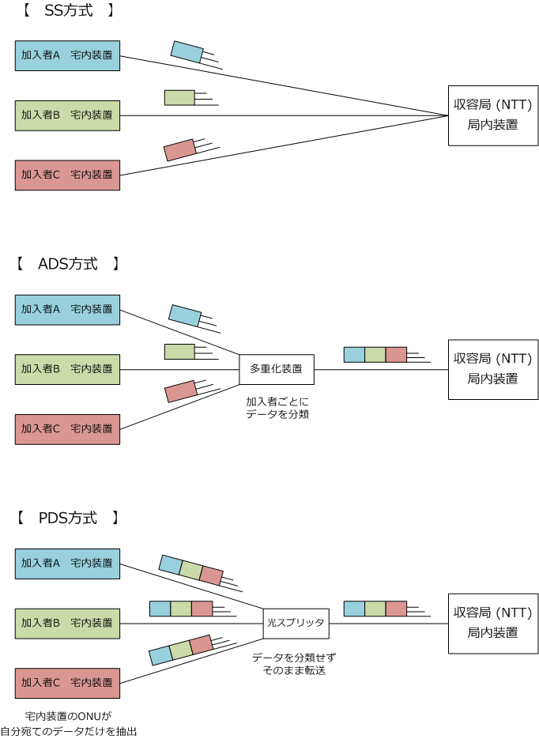
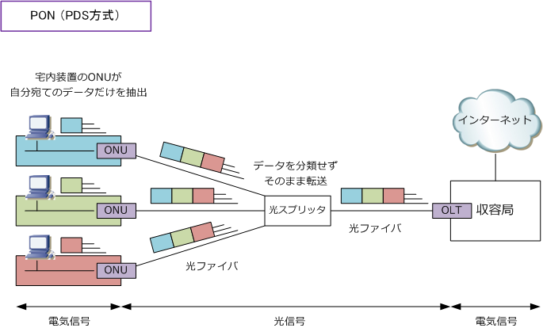
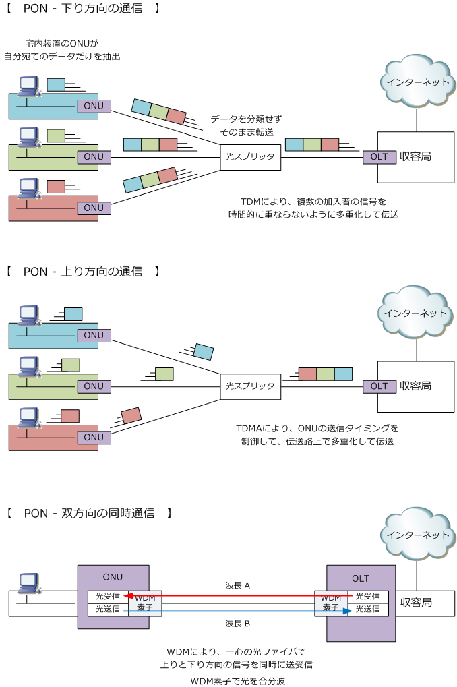

Internet - FTTH
インターネット接続 - FTTHとは
FTTH（Fiber To The Home）は、通信設備の収容局からユーザ宅までの通信伝送路を光ファイバとして 直接引き込む高速なブローバンドアクセス回線のシステムです。NTT等の収容局から各加入者のユーザ宅 までのラストワンマイルを光ファイバで構築するので、理論上 100Mbps～1Gbps の常時接続サービスを 実現することができます。2001年からBフレッツという名称において FTTH サービスが開始されています。
加入者すべてに各ユーザ宅まで光ファイバへ移行するためには莫大なコストが必要なので、実際のところ 地方においてはまだまだ移行できていない状態です。NTTではこのラストワンマイルにおける光ファイバ の移行よりも共用回線部分の光ファイバへの移行を先に完了させる計画にあります。この共用回線部分の 光ファイバ化をFTTC（Fiber To The Cabinet）といいます。また、商用ビルや高層マンションの集合施設 ではFTTHが実現されているケースが多く、FTTHと区別してFTTB（Fiber To The Building）と言います。
インターネット接続 - FTTHの接続形態
NTTの収容局から各ユーザ宅までのアクセス網のネットワーク構成には専有型と共有型の2種類があり 専有型にはSS方式という方式があり、共有型には、ADS方式とPDS方式という2つの方式があります。
| 接続形態 | 接続方式 | 説明 |
|---|---|---|
| 専有型 | SS方式 | SS(Single Star)方式。収容局と加入者宅を1対1で接続する方式。通信の伝送路を加入者ごと に専有することができるが、加入者ごとに光ファイバーが必要なため全体のコストが高くなる。 |
| 共有型 | ADS方式 ( AON ) |
ADS(Active Double Star)方式。収容局と加入者宅の間で多重化装置を使用することにより 複数の加入者の信号を多重化して１対Nで接続する方式。多重化装置から加入者の宅内の装置 まで既存のメタルケーブルを利用できるメリットがある。一方で、多重化装置に給電が必要 である点や多重化装置の設置場所に制約があるデメリットがある。あまり使用されない方式。 |
| 共有型 | PDS方式 ( PON ) |
PDS(Passive Double Star)方式。収容局と加入者宅の間で光スプリッタを使用することで １対Nで接続する方式。ある程度の加入者が集まらないと、SS方式よりコストが高くなる方式 になるが、光スプリッタによる分岐は設備自体が安価で給電等も不要で設置しやすいメリット がある。WDMを用いることで容易に放送型サービスを追加できる。最も使用されている方式。 |

インターネット接続 - POSとは
NTTのいうADSという方式は一般的にはAON（Active Optical Network）と呼ばれている方式です。また NTTのいうPDSという方式は一般的にはPON（Passive Optical Network）と呼ばれている方式のことです。 以下では、最も普及しているPONについて詳しく解説します。PONの構成（PDSの構成）は、物理的には 収容局に設置するOLT（Optical Line Terminal）、加入者宅内に設置するONU（Optical Network Unit）、 光スプリッタ、光ファイバから構成されます。各役割は以下の通りです。また、下図はPDS方式の詳細です。
| PONの構成要素 | 説明 |
|---|---|
| OLT | 収容局に設置される終端装置。OLTは、ONUから受信した光信号を電気信号に変換して インターネット通信を行うために上位となる通信機器への転送、また、インターネット側 の通信機器から受信した電気信号を光信号に変換してONUへ転送する役割を担っている。 |
| 光スプリッタ | OLTとONUの間に光信号を合分波する光スプリットを設置することで、１つのOLTに複数 のONUが接続される形態を実現することができる。スプリッタなので給電の必要はなし。 |
| ONU | ONUは、加入者宅のPCやルータから受信した電気信号を光信号に変換してOLTへ転送。 また、OLTから受信した光信号を電気信号に変換してPCやルータにその電気信号を転送。 |
| 光ファイバ | 光信号を伝送する。FTTHでは、伝送メディアに光ファイバーを採用することによって、 ADSLと比べてノイズの影響が受けにくく、距離に影響を受けにくいことを実現している。 |

PONのシステムを実現するためにはTDM、TDMA、WDMという3つの技術を実装させる必要があります。
| PONを実現する3つの技術 | 説明 |
|---|---|
| TDM （Time Division Multiplexing） |
時分割多重化。OLT→ONU方向の下りの通信方向において、使用される技術。 TDMにより複数の加入者のデータ（信号）を時間的に重ならないように多重化 して伝送できる。なお、下りの信号では同一の光スプリッタに接続する全ての ONUで同一の信号を受信することから各ONUは自身のデータだけを抽出する。 |
| TDMA （Time Division Multiple Access） |
時分割多元接続。ONU → OLT方向の上りの通信方向で使用される技術。 上りの信号は複数のONUからの信号を光スプリッタにより合波されることになる ので伝送路上で衝突が起きないようTDMAにより各ONUのデータ送信タイミングと 送信量を制御することで伝送路上衝突することなく多重化されるようにしている。 |
| WDM （Wavelength Division Multiplexing） |
波長分割多重。一心の光ファイバで下りと上りの信号を同時に送受信できるよう にするために、WDMでは、上り方向と下り方向の通信で別々の波長を割り当てる。 |

この1本の光ファイバを途中で分岐させて複数 の加入者宅に引き込むPONシステムでは最大で 32の分岐としています（加入者は32までです）
1本の光ファイバを分岐して複数の加入者にて 共有するPONの技術にギガビットイーサネット の技術を取り入れた技術はGE-PONと言います。 GE-PONでは、加入者宅へのアクセス回線として 上り下りともに1Gbpsの通信速度を実現します。 ※この1Gbpsの通信速度は、理論上の最大速度。
GE-PONは、IEEE802.3ahとして2004年6月に 規格されています。例えばフレッツ光ネクスト のサービスなどではGE-PONを採用しています。